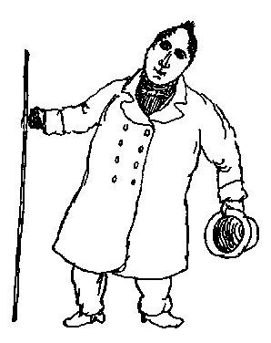

Letters of Frederick Engels
Bremen, May 23, 1839
Dear Marie,
Now I ride out every Sunday in the country with R. Roth. Last Monday we went to Vegesack and Blumenthal and just when we wanted to have a look at the famous Bremer Schweiz (this is a very small strip of land with small sand-hills), an enormous pall of haze came down like a cloud and in five minutes it was almost quite dark, so that we were unable to enjoy the so-called beautiful view. —  But on Whit Monday it is really lively in these parts. Everybody goes out of town and it is dead quiet in Bremen, but at the town gates you see procession after procession of carriages, riders and walkers. And such a dust, it is terrible. For the roads are covered with sand to a depth of half a yard and of course it all goes up into the air. A broker called Jan Krusbecker has just arrived and I'll draw him for you.
He looks exactly like this. He has eyes like rockets and an always half-melancholy, half-smiling air. Adieu.
Your brother
Friedrich